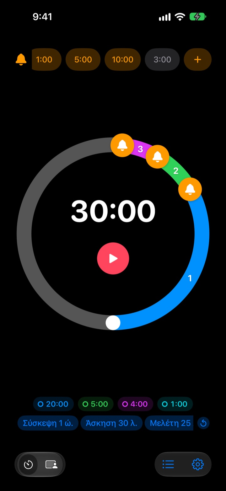
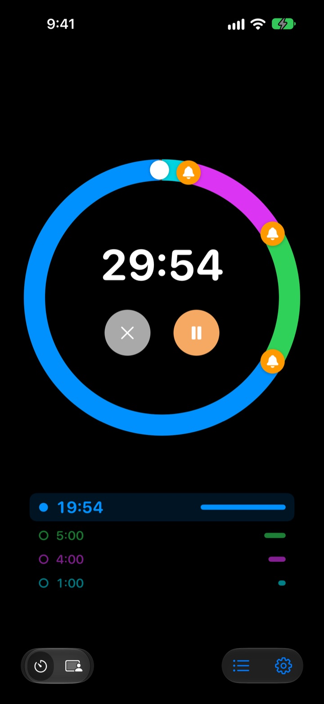
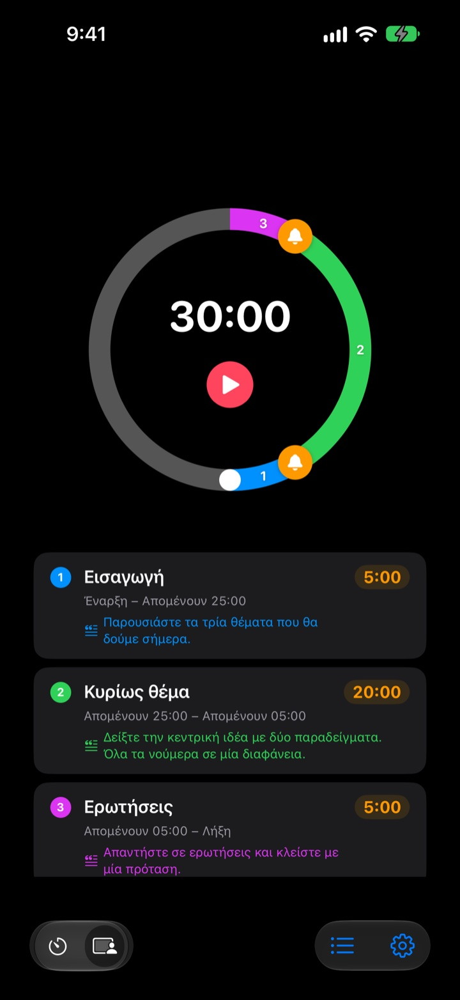
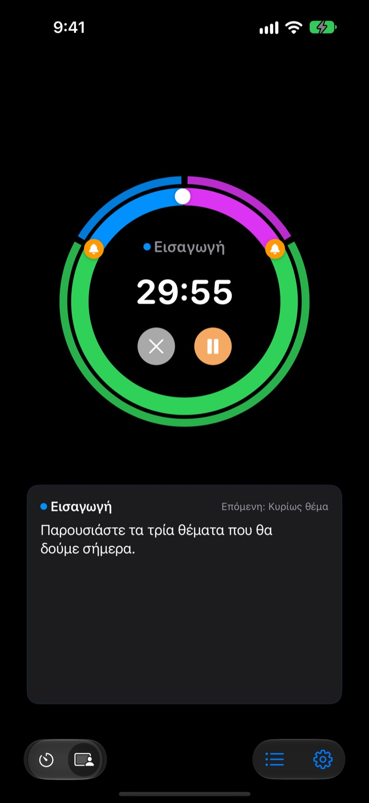

Όχι όταν τελειώσει,
αλλά πριν
5 λεπτά πριν τελειώσει η ομιλία, 3 πριν κλείσει η σύσκεψη. Το Rereminder σάς ειδοποιεί σε κάθε σημείο που διαλέγετε, για να μην κοιτάτε συνέχεια το ρολόι.
Οι προειδοποιήσεις είναι δωρεάν και χωρίς όριο. Για iPhone, Apple Watch και Mac.

Δοκιμάστε το εδώ
Διαλέξτε διάρκεια και προειδοποιήσεις και πατήστε το κόκκινο κουμπί. Ένα λεπτό περνά σε ένα δευτερόλεπτο, και κάθε προειδοποίηση ακούγεται την ώρα της.
Σας χτύπησε ποτέ το χρονόμετρο όταν ήταν ήδη αργά;
Ένα απλό χρονόμετρο χτυπά μόνο στο μηδέν. Η ομιλία τελειώνει πριν φτάσετε στο συμπέρασμα, το μάθημα κλείνει χωρίς ανακεφαλαίωση και η σύσκεψη πέφτει πάνω στην επόμενη χωρίς απόφαση. Δεν χρειάζεστε ένα σήμα ότι ο χρόνος τελείωσε, αλλά μια ειδοποίηση όσο προλαβαίνετε ακόμα να κλείσετε.
Προειδοποιήσεις πριν το τέλος, όσες θέλετε
Σύρετε τα καμπανάκια στον κύκλο 10, 5 ή 1 λεπτό πριν το τέλος, ή όπου αλλού θέλετε. Δεν υπάρχει όριο, και κάθε προειδοποίηση μπορεί να έχει το δικό της μήνυμα, όπως «Κλείσε τις διαφάνειες».
Με την οθόνη σβηστή, ο χρόνος που απομένει φαίνεται στην οθόνη κλειδώματος και στο Dynamic Island, και το Apple Watch σάς χτυπά απαλά στον καρπό.

Χωρίστε την ομιλία σε ενότητες
Εισαγωγή 5 λεπτά, κύριο μέρος 20, ερωτήσεις 5. Δώστε σε κάθε ενότητα όνομα και κείμενο. Σε κάθε αλλαγή έρχεται ειδοποίηση με το όνομά της, και ο χρόνος μοιράζεται σωστά σχεδόν από μόνος του. (Pro)

Τι λέτε τώρα, πάνω στην οθόνη
Όσο τρέχει, βλέπετε μεγάλα το κείμενο της τρέχουσας ενότητας και ποια ακολουθεί. Αν περάσετε το μηδέν, συνεχίζει να μετρά, για να ξέρετε πόσο ξεφύγατε. (Pro)

Ξεκινάτε σε τρία βήματα
- 1
Ορίστε τον χρόνο
Γυρίστε τον κύκλο ή πατήστε τον χρόνο και πληκτρολογήστε τον. Ένας γύρος είναι 60 λεπτά, δύο γύροι 120.
- 2
Βάλτε προειδοποιήσεις
Πατήστε μια ετικέτα όπως 1:00 ή 5:00 επάνω, ή σύρετε ένα καμπανάκι στον κύκλο.
- 3
Ξεκινήστε και ξεχάστε το
Κλειδώστε το iPhone. Το iPhone και το Apple Watch ειδοποιούν σε κάθε σημείο που ορίσατε.
Οι πιο συνηθισμένες ρυθμίσεις
- Ομιλία 20 λεπτών
- 5 λεπτά πριν «Πέρνα στο συμπέρασμα», 1 λεπτό πριν «Ευχαριστώ»
- Μάθημα 45 λεπτών
- 10 λεπτά πριν «Εξήγηση εργασίας», 3 λεπτά πριν «Ανακεφαλαίωση»
- Σύσκεψη 30 λεπτών
- 5 λεπτά πριν «Καταγραφή αποφάσεων»
- Μάθημα πιλάτες ή γιόγκα
- Λειτουργία συνεδρίας, μία ενότητα ανά σειρά ασκήσεων (Pro)
- Διάβασμα 25 λεπτών
- 5 λεπτά πριν, μετά διάλειμμα
- Ξεκούραση 3 λεπτών ανάμεσα στα σετ
- 30 δευτ. πριν «Ετοιμάσου για το επόμενο σετ»
- Συνάντηση καθοδήγησης μίας ώρας
- 15 και 5 λεπτά πριν
Ό,τι χρησιμοποιείτε συχνά, αποθηκεύστε το ως πρότυπο και ξεκινήστε το με ένα πάτημα (από τη Μνήμη και πάνω). Μπορείτε επίσης να ξεκινάτε ή να σταματάτε χρονόμετρο με τις Συντομεύσεις και το Siri.
Οι προειδοποιήσεις είναι δωρεάν. Πληρώνετε μόνο αν θέλετε να θυμάται.
Δωρεάν
- Προειδοποιήσεις χωρίς όριο
- Δικό σας μήνυμα σε κάθε προειδοποίηση
- Live Activity στην οθόνη κλειδώματος και στο Dynamic Island
- Ειδοποίηση μέχρι να απαντήσετε και λήξη με ξυπνητήρι
- Εφαρμογή Apple Watch και γραμμή μενού στο Mac
- Όλα τα χρώματα θέματος
Μνήμη · Pro
- Μνήμη: αποθηκεύστε ρυθμίσεις ως πρότυπα και ξεκινήστε τα με ένα πάτημα
- Μνήμη: ανοίγοντας ξανά την εφαρμογή, όλα είναι όπως τα αφήσατε
- Pro: όλα της Μνήμης και Λειτουργία συνεδρίας με ονόματα ενοτήτων και κείμενα
- Pro: υπέρβαση χρόνου, ιστορικό και στατιστικά
Για κάθε πρόγραμμα διαλέγετε ετήσια συνδρομή ή εφάπαξ αγορά για πάντα. Τη Λειτουργία συνεδρίας, την υπέρβαση χρόνου και το ιστορικό μπορείτε να τα δοκιμάσετε μερικές φορές πριν πληρώσετε.
Χωρίς διαφημίσεις. Και το Πάσο για πάντα ανοίγει όλες τις εφαρμογές του Leeo.
Συχνές ερωτήσεις
Μια προειδοποίηση δεν χτύπησε.
Σχεδόν πάντα φταίνε οι άδειες ή η Εστίαση. Ελέγξτε την άδεια ειδοποιήσεων στην εφαρμογή, στις Ρυθμίσεις › Τρόπος ειδοποίησης. Αν χρησιμοποιείτε Εστίαση, προσθέστε το Rereminder στις επιτρεπόμενες εφαρμογές στις Ρυθμίσεις › Εστίαση του iOS. Στη σιωπηλή λειτουργία έχετε μόνο δόνηση. Αν το Rereminder είναι στις Ρυθμίσεις › Γνωστοποιήσεις › Προγραμματισμένη σύνοψη, οι ειδοποιήσεις του κρατιούνται για αργότερα, οπότε βγάλτε το από εκεί.
Θα καταλάβω το τέλος στη σιωπηλή λειτουργία;
Ναι. Ενεργοποιήστε τη «Λήξη με ξυπνητήρι» και θα χτυπήσει δυνατά ακόμα και σε σιωπηλή λειτουργία ή με Εστίαση. Με την «Ειδοποίηση μέχρι να απαντήσω» επαναλαμβάνεται μέχρι να πατήσετε Διακοπή ή Αναβολή στην ειδοποίηση.
Το Apple Watch δεν συγχρονίζεται.
Ανοίξτε τις Ρυθμίσεις › Οι συσκευές μου στην εφαρμογή, εκεί φαίνεται ποιο βήμα λείπει. Το ρολόι πρέπει να είναι συζευγμένο με αυτό το iPhone, το Rereminder πρέπει να είναι εγκατεστημένο στο ρολόι, και πρέπει να το ανοίξετε μία φορά στο ρολόι μετά την εγκατάσταση. Από εκεί και πέρα το χρονόμετρο περνά στο ρολόι ακόμα κι αν η εφαρμογή του είναι κλειστή.
Το Mac εμφανίζεται ως μη συνδεδεμένο.
«Συνδεδεμένο» σημαίνει ότι η εφαρμογή ήταν ανοιχτή σε εκείνο το Mac τα τελευταία 10 λεπτά, οπότε ένα Mac που μόλις ξύπνησε εμφανίζεται σε λίγα λεπτά. Και οι δύο συσκευές χρειάζονται τον ίδιο λογαριασμό iCloud με ενεργό το iCloud Drive. Η εφαρμογή για Mac θέλει macOS 26 ή νεότερο.
Πλήρωσα αλλά δεν ξεκλειδώθηκε τίποτα.
Πατήστε «Επαναφορά αγορών» στην οθόνη των προγραμμάτων, συνδεδεμένοι με τον ίδιο Λογαριασμό Apple με τον οποίο πληρώσατε. Οι αγορές για πάντα επιστρέφουν ακόμα και αν διαγράψετε την εφαρμογή ή αλλάξετε συσκευή.
Τα αποθηκευμένα πρότυπα είναι κλειδωμένα.
Είναι ακόμα εκεί. Χωρίς Μνήμη ή Pro μένουν ορατά αλλά κλειδωμένα, και ανοίγουν ξανά μόλις αγοράσετε ένα από τα δύο.
Πώς παίρνω επιστροφή χρημάτων;
Τις επιστροφές τις χειρίζεται η Apple. Ζητήστε την στο reportaproblem.apple.com με τον Λογαριασμό Apple που πληρώσατε. Αν κάτι δεν λειτουργούσε, πείτε το και σε μένα, για να μη συμβεί στον επόμενο.
Μπορώ να το δοκιμάσω χωρίς εγκατάσταση;
Ανοίξτε το m1zz.github.io/rereminder στο iPhone και το χρονόμετρο ξεκινά αμέσως ως App Clip. Ο κύκλος και οι προειδοποιήσεις είναι εκεί. Τα πρότυπα, η Λειτουργία συνεδρίας και η εφαρμογή του ρολογιού βρίσκονται στην πλήρη εφαρμογή.
Σε ποιες συσκευές λειτουργεί;
iPhone με iOS 26 ή νεότερο, Apple Watch με watchOS 11.6 ή νεότερο και Mac με macOS 26 ή νεότερο. Το iPad δεν υποστηρίζεται ακόμα. Η εφαρμογή υπάρχει σε 24 γλώσσες.
Πού μένουν τα δεδομένα μου;
Χρονόμετρα, πρότυπα, ονόματα ενοτήτων, κείμενα και ιστορικό μένουν στη συσκευή σας και σβήνονται μαζί με την εφαρμογή. Η εφαρμογή στέλνει μόνο ανώνυμα στατιστικά χρήσης που βοηθούν να βελτιωθεί. Η πολιτική απορρήτου γράφει ακριβώς ποια.
Ερωτήσεις ή σχόλια; Γράψτε στο leeo@kakao.com. Συνήθως απαντώ μέσα σε 2 με 3 ημέρες.